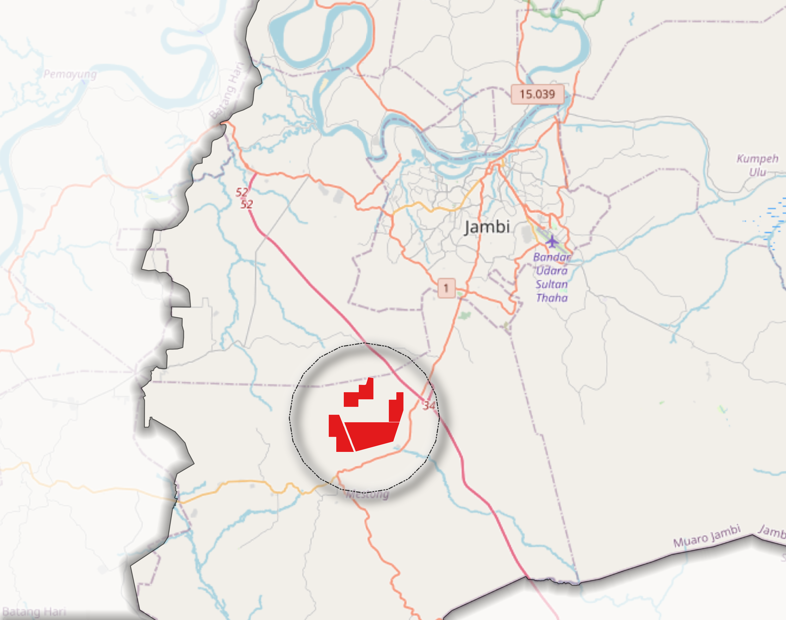
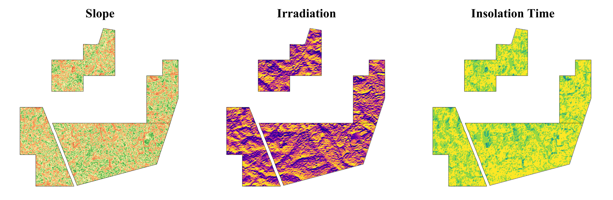
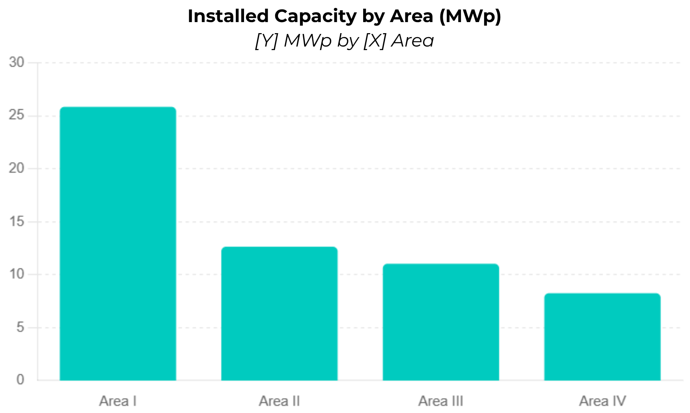
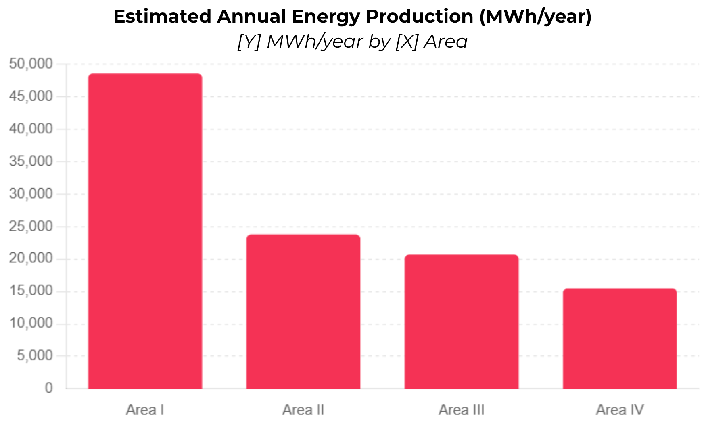

Solar Farm Site Selection in Muaro Jambi
Land Suitability & Geospatial Modeling for Optimal Solar PV
Abstract
This study evaluates four candidate sites for utility-scale solar photovoltaic (PV) development in Muaro Jambi Regency, in the southwestern part of Jambi Province near Jambi City. Solar resource potential was modeled geospatially, and the results indicate consistently high and uniform irradiation (~6.6 kWh/m²/day) with a stable 7-hour Peak Sun Hour across all sites. Because solar resource quality is effectively uniform, it is not the limiting factor; instead, land scale becomes the key determinant of project feasibility and energy output. Area I emerges as the primary development anchor with the largest extent and highest production potential (~48.6 GWh/year), Area II as a strong secondary candidate for phased expansion, and Areas III and IV as viable strategic reserves. Collectively, the four sites offer a total potential of 57.77 MWp and ~108.6 GWh/year.

1. Study Area
The identified area lies in Muaro Jambi Regency, in the southwestern part near Jambi City.

2. Solar Resource Modeling
Solar radiation was modeled to estimate the incoming solar energy available at each site. Following the clear-sky model implemented in the GRASS GIS r.sun module, global irradiation is computed as the sum of three components — beam (direct), diffuse, and ground-reflected radiation — using the digital elevation model together with derived slope, aspect, and latitude surfaces.
2.1 Global Irradiation ($G$)
where $G$ is global irradiation (Wh·m⁻²·day⁻¹), $B$ is the beam (direct) component, $D$ is the diffuse component, and $R$ is the ground-reflected component.
For real-sky conditions, the clear-sky beam and diffuse components are reduced by atmospheric coefficients that account for cloudiness and other attenuation:
where $c_{bh}$ and $c_{dh}$ are the beam and diffuse reduction coefficients (values between 0 and 1). The model also employs the Linke atmospheric turbidity factor and the ground albedo coefficient.
2.2 Peak Sun Hours (PSH)
Peak Sun Hours express daily irradiation in equivalent hours at the reference irradiance of 1,000 W·m⁻² (1 kW·m⁻²):
At ~6.6 kWh/m²/day, this yields the stable ~7-hour PSH reported across all sites.


3. Capacity and Energy Yield Estimation
3.1 Installed Capacity ($P$)
Installed PV capacity scales with usable land area and a per-area power density:
where $P$ is installed capacity (MWp), $A$ is the usable site area, and $\rho$ is the capacity (power) density per unit area. The tabulated values correspond to a density of approximately 0.05 MWp/ha (i.e. ~20 ha per MWp).
3.2 Annual Energy Production ($E$)
Annual energy yield is estimated from installed capacity, the daily Peak Sun Hours, and a performance ratio that captures system losses:
where $E$ is annual energy production (MWh/year), $P$ is installed capacity (MWp), $\text{PSH}$ is the daily peak sun hours (h/day), $365$ converts to an annual sum, and $PR$ is the dimensionless performance ratio (typically 0.75–0.85).
3.3 Site Results
| Area | Irradiation (Wh/m²/day) | Area (ha) | Capacity (MWp) | Production (MWh/year) | Role |
|---|---|---|---|---|---|
| Area I | 6592.86 | 517.09 | 25.85 | 48,593.14 | Anchor site |
| Area II | 6612.57 | 252.73 | 12.64 | 23,789.32 | Expansion |
| Area III | ~6600 | 220.61 | 11.03 | 20,712.56 | Support |
| Area IV | ~6600 | 164.96 | 8.25 | 15,481.08 | Support |
| Total | — | 1,155.39 | 57.77 | 108,576.10 | — |


4. Interpretation
The solar radiation modeling indicates that all candidate sites possess consistently high and uniform solar potential, with irradiation around 6.6 kWh/m²/day and a stable 7-hour Peak Sun Hour. This suggests that solar resource quality is not the limiting factor; instead, land scale becomes the key determinant of project feasibility and energy output.
Among the four areas, Area I clearly emerges as the primary development anchor, offering the largest land extent and highest production potential (~48.6 GWh/year). Area II follows as a strong secondary candidate, combining excellent irradiation with substantial capacity, making it ideal for phased expansion. Areas III and IV remain viable but secondary, functioning as strategic reserves or incremental development zones due to their smaller scale.
5. Strategic Insight
This analysis demonstrates that in high-potential regions, site prioritization shifts from resource availability to spatial scale, infrastructure efficiency, and land economics, highlighting the importance of integrating geospatial modeling with development strategy.